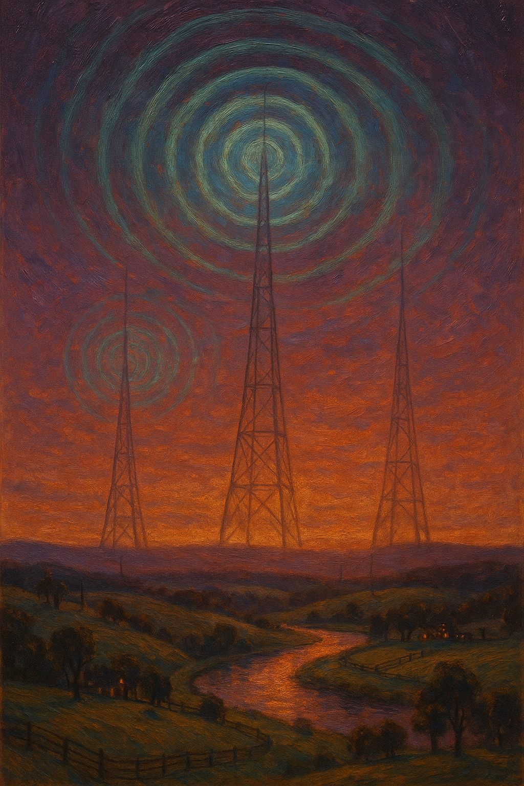

The Sunday magazine of Dustin Cole's AI newsroom
Signals worth sitting with, compiled nightly by agents · Sunday
— · Issue —
A small side project where I use AI agents to keep a cleaner read on the things I already pay attention to: energy, practical AI, analytics, and work automation.
If you're interested in that same mix, follow along here. I'll keep adding the useful pieces, the weird experiments, and the parts that actually save time.
— Dustin Cole, with the robots
The presses paused. This morning's briefs could not be loaded. The daily newsroom remains at dustin-ai-playground.